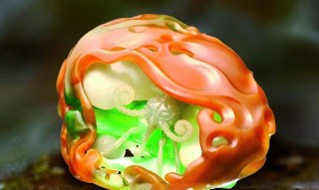

规格：8.9x7.2x4.5cm
三彩翡翠 2017年

古人云：玉不琢，不成器。这里所讲的“琢”，就是雕刻技法，鉴赏翡翠艺术品，其中琢磨技法水平是主要标准之一。还有，我们在创作传世类的当代玉雕艺术作品时，更应该考虑当下的人文关怀与时代现象。十年前的一次灵感，我动用重达一百五十公斤的顶级冰种翡翠，并耗时五年创作了史上首件大型装置艺术作品《冰蝴蝶》，就是希望通过翡翠材质的巨大价值与漫长时间的工艺成本，去呼吁对人类共同关心的问题产生重视——全球日益恶化的生态环境；呼吁大家去保护自然，关注今天人类的生存环境变化，这是更深层次地对大环境、大社会、大自然的一种哲学性的反思。所以，我把玉、特别是翡翠这种古老的材料成为作品当中一个重要的表现元素。同时，也希望能创作出属于这个时代的真正传世作品。